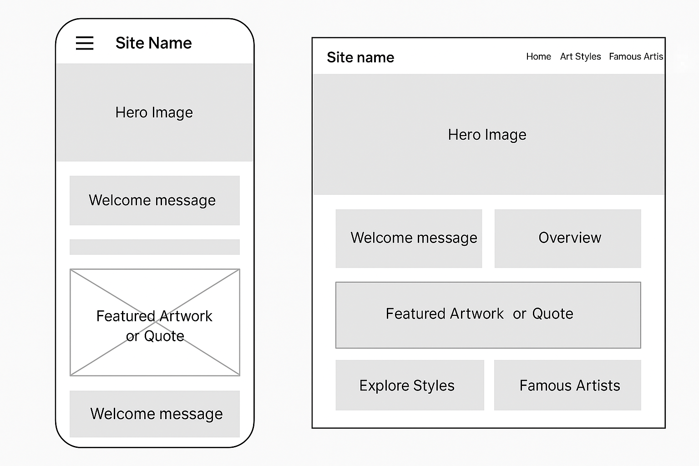

ArtScope: Website Planning Document
Site Name
ArtScope – I chose this name because it reflects the purpose of the website: to give visitors a broad and inspiring scope of the art world. It is short, memorable, and relevant.
Site Purpose
ArtScope provides a digital hub for exploring visual art by presenting educational content on major art styles and iconic artists. The site inspires curiosity, learning, and appreciation of art for students, hobbyists, and enthusiasts alike.
Target Audience
- Students learning about art history or doing research.
- Casual art lovers curious about famous styles and artists.
- Teachers or instructors looking for reference material.
User Scenarios
- What are the differences between Impressionism and Modern art?
- Where can I learn more about the life and work of Vincent van Gogh?
Color Schema
- #2e294e (Deep Indigo): Used for headings, navigation, and footer background.
- #f9f4ef (Soft Ivory): Used as the background for the site.
- #f26a4b (Coral Red): Used for buttons, links, and accent highlights.
Typography
- Playfair Display: Used for all main headings to add elegance and artistic flair.
- Open Sans: Used for body text, navigation, and buttons for clean readability.
Wireframes
Below are rough layout ideas for mobile and desktop views of the homepage:
Mobile & Desktop View
